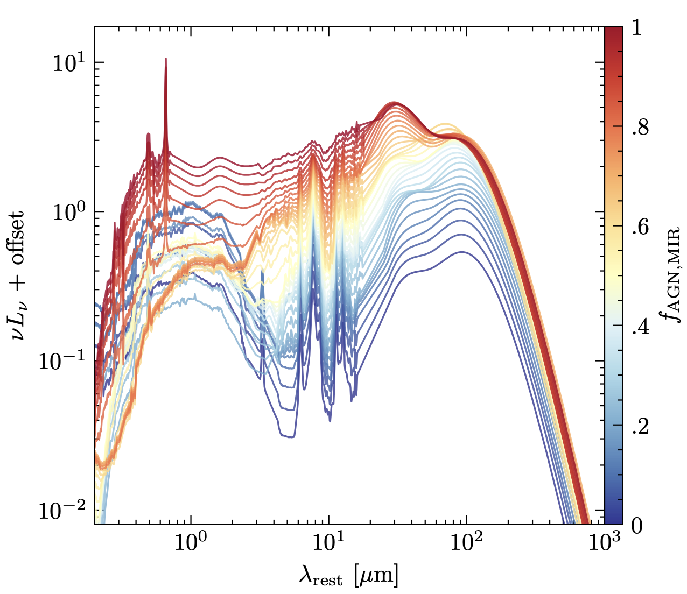
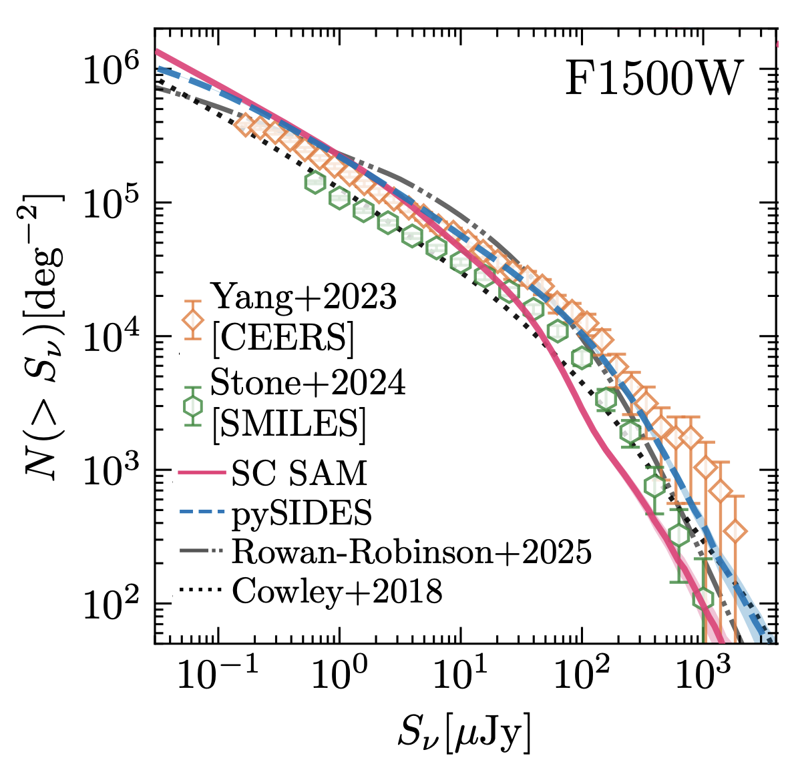
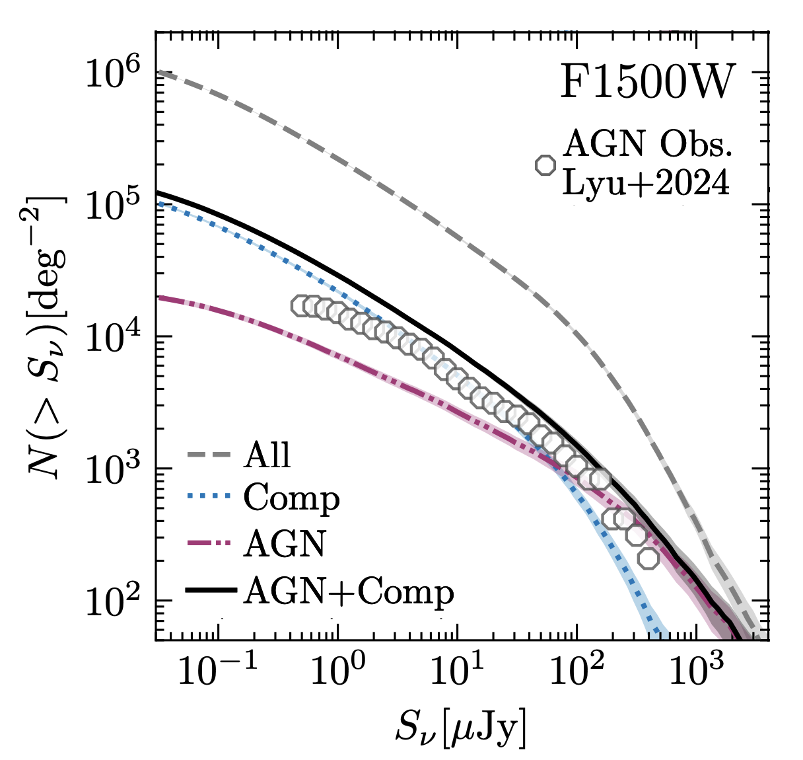
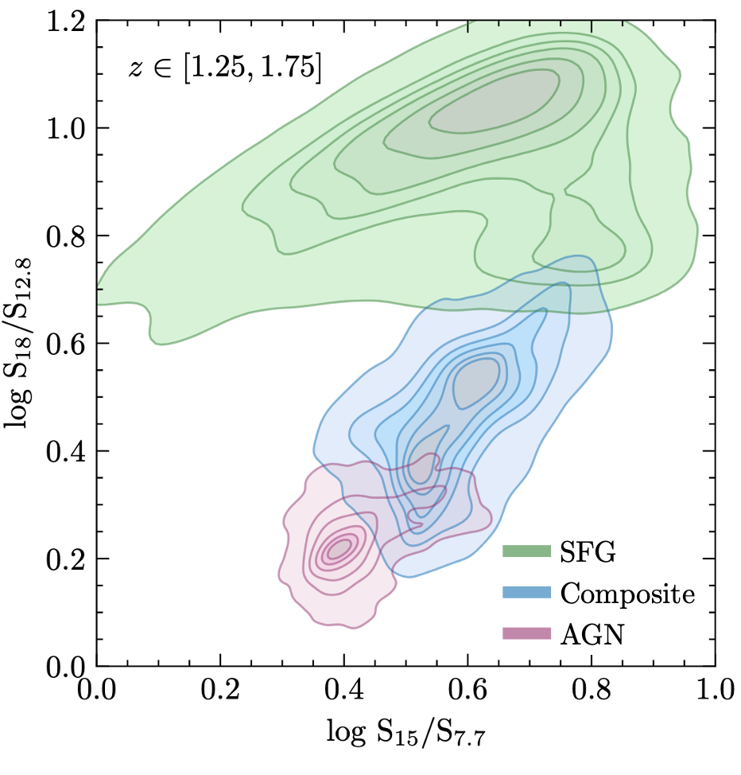
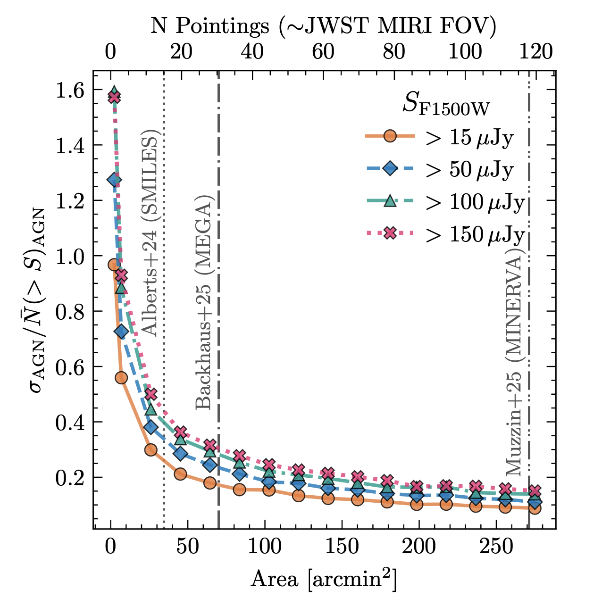

Authors: Edgar P. Vidal, Anna Sajina, Amber R. Banks, Matthieu Béthermin, Carl Ferkinhoff, Andreea Petric, Alexandra Pope, Jianwei Lyu, Vivian U, L. Y. Aaron Yung, Pallavi Patil
For Full modeling details, see: arXiv:2509.15331
This website provides an overview of our updated Simulated Infrared Extragalactic Dusty Sky (SIDES) framework and the associated data products. The project focuses on modeling dust-obscured galaxies and active galactic nuclei (AGN) in the era of JWST. Here we highlight key results, visualizations, and public data products derived from the simulations, including galaxy and AGN number counts and mid-infrared color–color diagnostics. These materials are intended to support interpretation of current and future JWST surveys. For full details of the methodology, assumptions, and scientific analysis, we refer readers to the accompanying paper.
Here we highlight the main results of our 2sq degree simulation that includes starforming main sequence galaxies, starburst, quiescent, star-forming AGN composite systems and AGN dominated systems in MIRI F1500W. The counts are available in MIRI F560W, F770W, F1000W, F1280W, F1500W, F1800W, F2100W, and F2550W as shown in the Vidal et al. 2025 paper.
The code for pySIDES is available here, and we plan to merge these updates into the main repository soon.

Sample of the modified mid-IR SED template catalog from A. Kirkpatrick et al. 2015, normalized to \(L_{\rm IR,tot} = 1 L_\odot\). The SEDs are offset for easier interpretation. Star-forming galaxies are defined as \(f_{\rm AGN,MIR} < 0.2\), composite galaxies as \(f_{\rm AGN,MIR} \in [0.2, 0.8]\), and AGN as \(f_{\rm AGN,MIR} > 0.8\). The procedure for adding the stellar contribution to the SED is summarized in Section 3.4. Only modeled galaxies with \(f_{\rm AGN} > 0.2\) adopt this template library. Adapted from Figure 2 in Vidal et al. (2025). These SEDs were compared to CIGALE model outputs in the context of Machine Learning in Hamblin et al. (2025).

Integral number counts in the MIRI F1500W band for all galaxy populations from the pySIDES model, compared with other theoretical models and observational data. Adapted from Figure 6 of Vidal et al. (2025). Galaxy counts in 8 MIRI bands are available.

Contributions from star-forming composite AGN (blue), AGN-dominated systems (blue), and their combined contribution (black) to the total galaxy counts (gray), compared with results from Lyu et al. (2024). Adapted from Figure 11 of Vidal et al. (2025). AGN counts in 8 MIRI bands are available.

MIRI color–color diagnostic diagrams separating star-forming galaxies (SFGs), composite galaxies, and AGN from the modified pySIDES model. Photometric cuts and noise estimates are matched to the reported 5σ sensitivity limits of the SMILES survey (Alberts et al 2024). Adapted from Figure 18 of Vidal et al. (2025). Four seperate color-color diagrams are available.

Quantification of cosmic variance effects showing that surveys with areas below 25 arcmin2 suffer from approximately 30% uncertainty in bright AGN counts. Thankfully, imaging surveys like MEGA (PI: Alison Kirkpatrick) and MINERVA (PI: Adam Muzzin) will be able to mitigate these effects. Data to reproduce this plot is available
{kind=link}
{kind=link}
{kind=link}
{kind=link}
{kind=link}